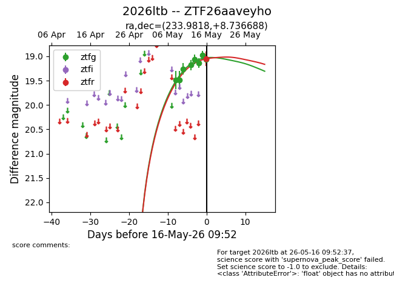
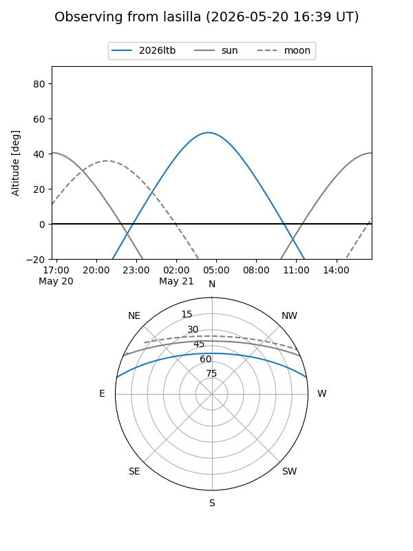
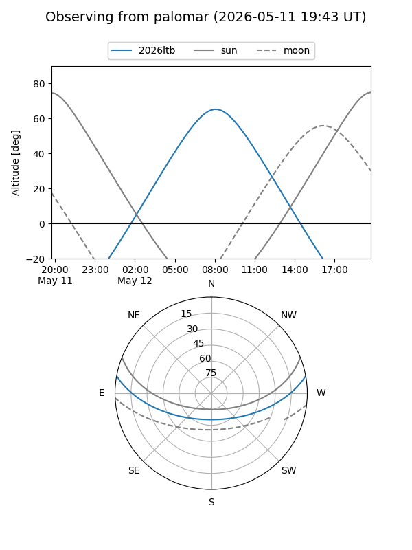
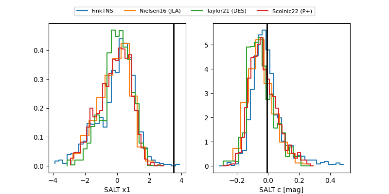

2026ltb
Target 2026ltb at 2026-05-16 09:54
Aliases and brokers:
FINK: link
Lasair: link
ALeRCE: link
TNS: link
YSE: link
alt names
ZTF26aaveyho (ztf,fink_ztf)
2026ltb (tns,yse)
Coordinates:
equatorial (ra, dec) = 233.9818,+8.73669
equatorial (HMS+DMS) = 15:35:55.62,+08:44:12.08
galactic (l, b) = (15.4824,+47.04733)
Flags:
Photometry:
last ztfg=19.07, ztfr=19.05
8 ztfg, 1 ztfr detections
Lightcurve

Visibility


Additional plots
